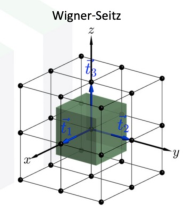

固体物理整理*
Table of Contents
适合 IAS 宝宝的简单讲义，适合懂了一些后回顾补全
尝试在期中之前完成考试内容整理
状态:部分AI未替换，缺第三章
居中()表示省略内容
课叫固体物理，其实改名晶体与电子的共舞完全可行。物理研究要对固体建模，首先基于前人经验，我们采用一个方便的网格来组成物质的骨架，符合这种模型的物质就分类为1——
1. 晶体结构
晶体具有周期性，可以用 基元 放到 格点 (lattice site) 的网络上表达2，所有格点构成 布拉伐格子 。为了保持格点之间的间隙，使用坐标系会更加方便，因此在空间中使用 基矢 来表达方向3。
Bravais 格子两个等价定义：
- 第一个定义：等价的几何点集合（可以用来判断一个图形是否是 Bravais 格子）。
- 第二个定义：由矢量 \(\mathbf{R}_n = n_1 \mathbf{a}_1 + n_2 \mathbf{a}_2 + n_3 \mathbf{a}_3\) 代表的所有点的集合，其中 \(n_1, n_2, n_3\) 为整数。
(省略了如何数划定范围内数目，简而言之是看一个原子被几个共享，如立方顶点就相当于1/8个)
Figure 1: 绿、蓝晶胞：cell 有两个格点；红原胞；蓝为惯用晶胞
同时重复性意味着可以找出最小单元，称之为 原胞 primitive cell，最小体现在 只包含一个格点 4。
（若要体现对称性，使用晶/单胞 unit cell 模型5）
原胞有各种选择（但是包围的⾯积/体积都相同），
一般常见使用WS原胞6，它的线\面取在两个格点的中垂面。

Figure 2: WS原胞 红色中垂线
有格点就能连线成面，平行直线称为 晶列 ，它定义⼀个方向，称作晶向。 描述参数称之为 晶向指数 ：在原胞基矢坐标系中，写格矢然后把坐标提取化互质。负数变成头上一横。很多为等价的如：⽴⽅格⼦⾥[100]、 \([\bar{1}00]\)、[010]、\([\bar{01}0]\)、[001] 和 \([00\bar{1}]\) 等价，统⼀记为 <100>
同样格点可以看作在平行等距的不同 晶面 上排列，描述晶面数学上使用法向量，参数称之为 晶面指数（密勒指数） ：取晶轴长度倒数。7
Figure 3: Miller 指数： (632)
相邻晶面间的间距： \(d^2=\frac{a^2}{h^2+k^2+l^2}\)
1.1. 简单晶体结构
- 简立方 Simple Cube
Po, CsCl - 面心立方 Face Center Cube
NaCl（结构很简单每个格点间隔放原子，但最小的8原子无法组成晶体（此时只有0.5Na0.5Cl）于是需要8个小立方组成大立方，故而原来顶点变成面心位置，相当于在大立方面心放不同大立方顶点不同的原子） - 体心立方 Body Center Cube
- 六角格子 石墨烯
其实倒格子的引入是一个很自然的事情，完全不需要用到傅里叶变换。主流教材（我用的胡安的书）是通过对正点阵做傅里叶变换得到的倒点阵；但是为啥要对正点阵做傅里叶变换却没有讲清楚。我总不能无缘无故做这事吧。而且主流教材还引入密勒指数。我当时就疯了……为了表示晶面族，老老实实用截距不好吗？？？为什么要搞个截距的倒数，还要化为互质整数？没有缘由地采用复杂的技术简直是浪费生命。于是在下面这篇文章中，作者浅显地描述了倒格子和密勒指数的关系，看完它就能获得一个自然的思路。
作者：心兰相依 链接：https://www.zhihu.com/question/264943291/answer/1062727011
1.2. 倒格子
基矢变换公式
倒格子中的WS原胞定义为 第一布里渊区10
等你学到chap4的时候就知道这个玩意多么有用了
我个人认为倒格子是固体物理学里最伟大的发明之一
这个东西不是听懂的，是自学学会的11
面心立方
这是晶格常数为 \(4\pi/a\) 的 BCC 结构
BCC 的倒格⼦为 FCC，第⼀布⾥渊区为正 12 ⾯体
体心立方
FCC 的倒格⼦为 BCC，第⼀布⾥渊区为截⾯八⾯体
Figure 4: https://zhuanlan.zhihu.com/p/617838245
格矢（我的理解：任意一个向量在当下基矢下表达）， 而倒格矢数量上就是法向量的倒数12
Harrison 判定法
快速判断倒空间里一个点在第几布里渊区：以这个点为圆心，到中心为半径，圆内包住倒格点数（不计本身，含圆上）
Figure 5: 红点在第⼀ BZ;⿊点在第⼆ BZ;紫点在第四 BZ
倒格矢和 Miller 指数之间的关系
倒格矢 \(\mathbf{G}_{hkl}\) 和晶面 (hkl) 垂直、和法线平行， 晶面距离为 \(d=\frac{2\pi}{\mathbf{G}_{hkl}}\)
其实上文倒格子就是实验得到的结果，为什么实验能得到：
1.3. 晶体衍射条件
用什么衍射：电磁（X 红外）、物质（电子中子）波
过程：固定波矢（动量）波通过，可以在特定方向得到散射出射光
不同的晶体结构会在衍射下得到什么结果？有两种思路，反射和动量角度解答，它们可以给出什么情况入射波会产生格点13。
Bragg布拉格方程
不严格但好用：衍射的实质是晶体中各原⼦散射波之间相互⼲涉的结果， 只是由于衍射线的⽅向恰好和原⼦⾯对入射波的反射⽅向相同，才得以使⽤ Bragg 条件，不能因此混淆平⾯反射和晶体衍射之间的本质区别 [1-3:16]
公式含义：反射与出射的波能相遇干涉增强
\begin{equation} \label{eq:Bragg} 2d\sin\theta=n\lambda \end{equation}
bragg方程给出格点上的点电荷散射波相干的条件，是点阵周期性导致的结果，但是只能给出衍射加强的条件，不能给出衍射强度的分布，而且镜面反射的物理图像很不清楚。
Laue劳厄关系
波撞到原子，弹性散射，方向改变其它不变。当入射出射应当是波长整数倍时发生衍射（？）
\begin{gather*} k_{i}-k_{f}=G_{HKL} \end{gather*}相当于是一个几何关系，当乘 ℏ 就是动量
可以反向Bragg 到 Laue(凑 \(G=2\pi/d,k=2\pi/\lambda\))
\begin{gather*} 2d\sin\theta=n\lambda\\ 2\pi\frac{2}{\lambda}\sin\theta=2\pi\frac{n}{d}\\ 2 \left[ \frac{2\pi}{\lambda} \right]\sin\theta=n \left[ \frac{2\pi}{d} \right]\\ 2k_{\lambda}\sin\theta=nG \end{gather*}Ewald 球面：找衍射方向？
(光斑亮度： 单电⼦散射，多电⼦散射，⼏何结构因⼦？H+K+L=2n有衍射峰) (粉末衍射⽅法，电/中⼦衍射)
（系统消光：因为对称性导致一些衍射峰消失？原因）
课堂笔记
光斑亮度 公式： \(F=f\sum_a e^{i G_{HKL}ra}\)
简单立方：都为0，e0=1，全都可以显现 体心立方： \(F_{HKL}=f[1+\cos(H+K+L)\pi+i\sin(H+K+L)\pi]=f[1+\cos(H+K+L)\pi]\)
偶数情况时正好取 -π 得 -1 和为 0
高温下淬火（对应于缓慢冷却，两者影响围观结构）
光斑亮度其它影响因素：
- 晶体不完整性（单晶的形成条件给唱苛刻）周期性偏离（少了点）
- 温度：（0K 晶格不振动）晶格振动，峰展宽，眼设置降低
- 吸收影响： 吸收光谱和 XCD重合
- 消光效应
测晶体很难（可能一年都长不出一个好单晶）
主要采用粉末，多晶磨碎为粉末，方向是随机的。衍射图案为圆环？ 实验装置图 三维是一个锥形 网站看晶体衍射图案数据库： materials project
使用其它波来观察
- X 光
- 电子、中子衍射
（关于波粒二象，是粒子，也可以用作波） 基本 λ=h/p （光子没有（静止质量））
电子和中子 X光打进去，主要和原子核作用， 原子核大小 10-15 尺度 可见光~纳米级别 中子可以透过电子——研究同位素结构因子少，不带电，研究核的自旋 困难在于可靠的中子源（核爆——四川；散裂中子源东莞）
电子：调整加速电压 衍射强度更高
中子最优
目前实验室：橡树林、日本、澳大利亚
散裂中子源东莞（类似同步辐射？） 加速-撞击靶点（选中子多的元素，选如钨受撞击）-能量筛选（波长控制） 「 视频：探测物质磁性 」
高能物理：利用碰撞看飞出来的碎片来得到关于内在结构的信息 STM：实空间成像晶元平整度检测，现在能做到 10-10 级别。利用量子效应。电子
课外光学知识： λ T=b 光谱中心线和温度关系 太阳500 可估测表面温度 5000-6000K 红橙黄绿蓝靛紫，波长下降，温度上升——焰色反应颜色估测发生是温度大小
1.4. 电子中子探测
- 电⼦波长可调范围⼤，得到的衍射光斑数⽬远比 X 射线的衍射光斑多，反应更多信息
- 电⼦和原⼦中原⼦核和电⼦通过库仑作⽤发⽣发散。这种相互作⽤很强，因此晶体对电⼦的散射能⼒比对X射线的散射能⼒强的多，导致电⼦衍射强度比 X 射线衍射强度⾼
- 总的来说中⼦衍射较优
(中子来源：散裂中子:小粒子撞重元素/核爆)
(显微镜)
晶体结构之上是维系构成的结合—— 下一节
1.5. 习题
1-1
为什么Po和CsCl都是简立方晶体？
Po 是代表性简立方晶体； CsCl 因为Cs,Cl两者不等价
 Cs+ 和 Cl− 不等价， 不能都抽象为格点，把抽象的格点取在 Cs+ 位置，得到和Po简⽴⽅。
Cs+ 和 Cl− 不等价， 不能都抽象为格点，把抽象的格点取在 Cs+ 位置，得到和Po简⽴⽅。
和 NaCl 区别：NaCl 都在顶点也就是原子间距相同，这里 CsCl A 与 B 原子距离为B 与 B 原子距离 \(1/\sqrt{2}\) 因此说不等价。
我们目前接触到了四种 Bravais 格⼦（简⽴⽅，体⼼⽴⽅，⾯⼼⽴⽅，以及六角密堆），总共有多少种不同类型的三维 Bravais 格⼦
\(\boxed{14}\) 种
六方格子为何需要四指标表示？试举例说明。
六方晶系采用四指标表示（Miller - Bravais指数），即（uvsw）表示，主要是为了更方便地描述六方晶系的对称性。由于六方晶系具有独特的对称性，其晶面族的等价性相对复杂，传统的三指标表示法（hkl）在某些情况下难以充分体现这种对称性。 例如： \(1\bar{1}00\)
写晶胞的基矢
PPT 1-1:39
| 类型 | 晶体 | 基矢 |
|---|---|---|
| sc |  | |
| bcc |  |
|
| fcc |
1-2
1.如何通过对称性简化介电常数的计算
以⽴⽅晶体为例⼦，⾸先，确定晶体点群：明确材料所属的晶体学点群，不同点群对应不同的对称操作︔ 列出对称操作对应的变换矩阵：每个对称操作对应⼀个坐标变换矩阵 A，例如旋转轴︔ 应⽤对称操作约束条件：介电常数张量 ε 需满⾜对称操作下的不变性，即： $ε=ε'= Aε A-1$︔推导独⽴分量： 若存在对称轴或镜⾯，非对角分量可能为零。旋转对称性可能导致某些对角分量相等（如⽴⽅晶系 \(\varepsilon_{11}=\varepsilon_{22}=\varepsilon_{33}\) ）。具体数学过程见上节课件P16-17。
2.按照对称性，三维晶体可以分成哪⼏类？
7 个晶系 和 32 个点群，进一步可以归纳为 230 个空间群。
空间群：三维 230 ／⼆维 17
- Crystal class：三维 32 ／⼆维 5 （按照点群来划分，具有相同的点对称性的空间群属于同⼀ 个 crystal class）
- Crystal system ／晶系：三维 7 ／⼆维 4 （具有相同 Bravias 格⼦的 crystal class 属于同⼀个 crystal system）
- Bravais class：三维 14 ／⼆维 5 （具有相同空间群的格⼦属于同⼀个 Bravais class）
- Lattice system ／格⼦系：三维 7 ／⼆维 4 （具有相同点群的格⼦属于同⼀个lattice system）
3.在晶体学中，为什么没有5重旋转轴？数学上如何解释
晶体的原⼦排列具有平移对称性，⽽平移对称性和旋转对称性必须兼容。根据晶体学中的点群和空间群理论，晶体只能有1、2、3、4、6次旋转轴，⽽没有5次或更⾼次的轴。这是因为五重对称无法与三维空间的周期性排列相容，导致无法无间隙地铺满空间。数学证明参考上节课件P28-29
1-3
1.为什么体心立方的倒格子是面心立方？试推导其倒格子基矢。
原因：根据倒格子基矢与正格子基矢的关系推导得出，体心立方正格子基矢满足特定坐标关系，通过计算其倒格子基矢，会发现符合面心立方的基矢特征。 推导：体心立方正格子基矢\
\begin{gather*} \boldsymbol{a}_{1}=\frac{a}{2}(\hat{\boldsymbol{y}}+\hat{\boldsymbol{z}} - \hat{\boldsymbol{x}})\\ \boldsymbol{a}_{2}=\frac{a}{2}(\hat{\boldsymbol{z}}+\hat{\boldsymbol{x}} - \hat{\boldsymbol{y}})\\ \boldsymbol{a}_{3}=\frac{a}{2}(\hat{\boldsymbol{x}}+\hat{\boldsymbol{y}} - \hat{\boldsymbol{z}}) \end{gather*}利用 \(\boldsymbol{a}_{i}\cdot\boldsymbol{b}_{j}=2\pi\delta_{ij}\) 可推导出倒格子基矢
\begin{gather*} \boldsymbol{b}_{1}=\frac{2\pi}{a}(\hat{\boldsymbol{y}}+\hat{\boldsymbol{z}})\\ \boldsymbol{b}_{2}=\frac{2\pi}{a}(\hat{\boldsymbol{z}}+\hat{\boldsymbol{x}})\\ \boldsymbol{b}_{3}=\frac{2\pi}{a}(\hat{\boldsymbol{x}}+\hat{\boldsymbol{y}}) \end{gather*}这正是面心立方的倒格子基矢。
2.对于简单立方晶格，计算 Miller 指数（hkl）晶面系的面间距 d 。
简单立方晶格正格子基矢 \(\boldsymbol{a}_{1}=a\hat{\boldsymbol{x}}\)，\(\boldsymbol{a}_{2}=a\hat{\boldsymbol{y}}\)，\(\boldsymbol{a}_{3}=a\hat{\boldsymbol{z}}\) ，倒格子基矢\(\boldsymbol{b}_{1}=\frac{2\pi}{a}\hat{\boldsymbol{x}}\)，\(\boldsymbol{b}_{2}=\frac{2\pi}{a}\hat{\boldsymbol{y}}\)，\(\boldsymbol{b}_{3}=\frac{2\pi}{a}\hat{\boldsymbol{z}}\) 。
晶面间距公式\(d = \frac{1}{\vert\boldsymbol{G}\vert}\)，\(\boldsymbol{G}=h\boldsymbol{b}_{1}+k\boldsymbol{b}_{2}+l\boldsymbol{b}_{3}=\frac{2\pi}{a}(h\hat{\boldsymbol{x}} + k\hat{\boldsymbol{y}}+l\hat{\boldsymbol{z}})\)
所以\(d=\frac{a}{\sqrt{h^{2}+k^{2}+l^{2}}}\) 。
1-4
1.如何从 Laue 方程推导 Bragg 方程？
2.为何体心立方（BCC）会出现系统消光？
BCC 每个晶胞只有一个原子
光斑亮度 \(I\propto|F_{hkl}|^2\)
为 0 就是消光现象
3.中子衍射相比X射线衍射在确定晶体结构时有什么优势？
- 中⼦（不带电）主要和原⼦核发⽣散射，X射线最要是和电⼦发⽣散射，因此可以测定含有重元素原⼦（外层电⼦多）晶体中轻原⼦的位置
- 可以区分出晶体结构中的同位素原⼦
- 中⼦散射的结构因⼦比较如容易获得（数⽬少），并且对散射角度的依赖比较⼩，因此数据处理比较⽅便
- 中⼦散射依赖于核的⾃旋，因此中⼦衍射谱不仅可以测量晶体⾥离⼦／原⼦的位置，还可以测量晶体⾥的⾃旋位置，研究磁性结构
- 可靠的中⼦源通常需要⼤型的质⼦同步辐射加速器
作业
1.简述晶体学中“单胞”（Unit Cell）与“原胞”（Primitive Cell）的区别，并举例说明在简立方（SC）和体心立方（BCC）结构中如何选择原胞。
单胞与原胞的区别：
- 单胞 ：是晶体结构的最小重复单元，包含完整的对称性信息，但不一定是最小的晶格单元。
- 原胞 ：是晶格的最小重复单元，只包含一个格点，体积最小，但不一定能反映晶体的对称性。
| 简单立方（SC） | 单胞和原胞相同 |
| 均为一个立方体，边长为 \(a\)，包含 1 个格点 | |
| 体心立方（BCC） | 原胞是一个立方体，边长为 \(a\)，包含 1 个格点（位于体心） |
| 单胞是一个立方体，边长为 \(a\)，包含 2 个格点（1 个体心 + 8 个顶点的 \(1/8\) 贡献） |
2.画出二维正方格子的 Wigner-Seitz 原胞，并描述其构造步骤。
- 选择一个格点作为中心。
- 画出该格点到最近邻格点的垂直平分线。
- 这些垂直平分线围成的最小区域即为 Wigner-Seitz 原胞。
在二维正方格子中，Wigner-Seitz 原胞是一个正方形，边长为 \(a\)，中心对称。
3.已知简立方晶体的晶格常数为 \(a\)，求晶面 (123) 的面间距 \(d_{123}\)。
晶面间距公式： \(d_{hkl} = \frac{a}{\sqrt{h^2 + k^2 + l^2}}\) 对于 (123) 晶面：
\begin{equation*} d_{123} = \frac{a}{\sqrt{1^2 + 2^2 + 3^2}} = \frac{a}{\sqrt{14}} \end{equation*}- 若正格子基矢为 \(\mathbf{a}_1 = a \hat{x}, \mathbf{a}_2 = a \hat{y}, \mathbf{a}_3 = a \hat{z}\)，求其对应的倒格子基矢，并说明倒格子与正格子的几何关系。
倒格子基矢公式计算结果： \[ \mathbf{b}_1 = \frac{2\pi}{a} \hat{y} \times \hat{z} = \frac{2\pi}{a} \hat{x}, \quad \mathbf{b}_2 = \frac{2\pi}{a} \hat{z} \times \hat{x} = \frac{2\pi}{a} \hat{y}, \quad \mathbf{b}_3 = \frac{2\pi}{a} \hat{x} \times \hat{y} = \frac{2\pi}{a} \hat{z} \]
几何关系：倒格子基矢是正格子基矢的傅里叶变换，倒格子空间的点阵描述了波矢空间。
5.列出立方晶系（Cubic System）中包含的 Bravais 格子类型，并说明其晶胞特征。
| 简单立方（SC） | 每个晶胞 1 个格点，立方对称性 |
| 体心立方（BCC） | 每个晶胞 2 个格点，体心对称性 |
| 面心立方（FCC） | 每个晶胞 4 个格点，面心对称性 |
6.推导 X 射线在晶体衍射中的 Bragg 方程及 Laue 方程，并比较 X 射线和中子散射的优劣。
- Bragg 方程推导：
假设晶面间距为 \(d\)，入射角为 \(\theta\)，X 射线波长为 \(\lambda\)。 反射光程差为： \[ \Delta = 2d\sin\theta \] 衍射条件为光程差为波长的整数倍： \[ n\lambda = 2d\sin\theta \] 即 Bragg 方程
- Laue 方程推导：
假设正格子基矢为 \(\mathbf{a}_1, \mathbf{a}_2, \mathbf{a}_3\)，波矢为 \(\mathbf{k}\) 和 \(\mathbf{k}'\)。衍射条件为： \[ \mathbf{a}_i \cdot (\mathbf{k} - \mathbf{k}') = 2\pi m_i \quad (i = 1, 2, 3) \] 。 其中 \(m_i\) 是整数，即 Laue 方程 。
X 射线与中子散射比较：
- *X 射线*：
- 波长较短，适合研究原子位置。
- 对轻元素（如 H）敏感度低。
- *中子*：
- 波长适中，对轻元素敏感。
- 能区分同位素。
- 需要核反应堆或加速器产生。
- 了解晶体的基本结构,掌握晶体学单胞和原胞的概念；
- 掌握 W-S 原胞的概念,会画出简单的W-S 原胞；
- 理解并掌握晶⾯的表⽰⽅法,掌握⾯间距的有关计算；
- 掌握倒格⼦的概念,明确倒格⼦和正格⼦的关系；
- 了解晶体学中的14种布拉伐格⼦及其特征；
- 晶体衍射中Bragg⽅程及Laue⽅程的推导。
2. 晶体结合方式
通过结合可以再进一步进行分类，依据就是结合力的类型。常见结合 （高中化学）：
| 晶体类型 | 力 |
|---|---|
| 共价 | 共享电子对的化学键 |
| 离子 | 正负离子键库伦作用 |
| 金属 | 自由电子与（金属）阳离子库伦作用 |
| 分子 | 分子力 |
(量子力学14)
更进一步我们给出一些势能的数学表达，对此作出一些区分。
- 距离很近，主要时 Pauli 泡利排斥（不相容原理），近似用幂 \(u_p=\frac{B}{r^n}\) 和指数 \(u_p=B \mathrm{e}^{-\frac{r}{\rho}}\)，远距离快速衰减。库伦势能认为贡献小
- 中心粒子（无库伦力）：范德华力。在距离远时占主导，用电偶极模型得到的 \(u=-\frac{a}{r^6}\)
分子晶体相互作用就取组合： \(u_a+u_p\) 远分子力|近泡利力（取 n=12），这个势能即 Lennard-Jones 势能:
\begin{equation} \label{eq:LJpo} u(r)=-\frac{a}{r^6}+\frac{b}{r^{n=12}}=4\epsilon \left[ \left( \frac{\sigma}{r} \right)^{12}-\left( \frac{\sigma}{r} \right)^6 \right] \end{equation}最低点：二阶导数等于0，平衡位置在此。若有等价N中性，相互作用总能量如下，A是只和晶体结构有关的常数
\begin{equation} \label{eq:1} U=2N\epsilon \left[ A_{12}\left( \frac{\sigma}{r} \right)^{12}-A_6\left( \frac{\sigma}{r} \right)^{6} \right] \end{equation}
(平衡间距)
(压缩系数、惰性元素晶体结合能、零点振动)
(堆积放在前一章结构了)
前文只是画了图像上的内容，并没利用深入，具体实验上的物理量比如热容何以从晶体结构中决定，数学模型带着新名词声子波动而来。
更仔细的讲，以上晶体结构无法给出更多信息，需要考虑格点上基元本身来计算物质的差异。这里所说的就是晶格振动，并由此抽象的声子。
2.1. 习题
2-1
总结各晶体特征
- 晶体结合的主要类型及其结合力来源是什么？
| 结合类型 | 结合力来源 | 特点 | 例子 |
|---|---|---|---|
| 离子结合 | 由正负离子之间的静电库仑力引起。 | - 高熔点、高沸点。- 硬度较大。- 在极性溶剂中易溶解。 | NaCl（氯化钠），典型离子晶体。 |
| 共价结合 | 由原子间共享电子对形成共价键。 | - 高熔点、高沸点。- 硬度大。- 不导电（无自由电子）。 | SiO2（二氧化硅），共价网络。 |
| 金属结合 | 由自由电子与金属阳离子之间的静电吸引力引起。 | - 良好的导电性和导热性。- 延展性和可锻性。- 熔点范围较广。 | Cu（铜），典型金属晶体。 |
| 分子结合 | 由分子间的瞬时偶极-诱导偶极相互作用或永久偶极-偶极相互作用引起。 | - 熔点和沸点较低。- 硬度较小。- 通常为绝缘体。 | Ar（氩气），范德华晶体。 |
| 氢结合 | 由氢原子与电负性较强的原子（如 N、O、F）之间的静电吸引力引起。 | - 熔点和沸点高于普通分子晶体。- 具有一定的方向性和距离依赖性。 | H2O（水），氢键作用显著。 |
2.晶体结合能如何定义与计算？以 van der Waals 晶体为例说明。
定义 ：晶体结合能是指将晶体分解为孤立的原子或分子所需的能量，通常用 \(E_b\) 表示。
计算公式： 对于 van der Waals 晶体，结合能可以通过 Lennard-Jones 势计算
\begin{equation*} E = -\frac{N}{2} \sum_{i,j} \left( A_{ij} r^{-12} - B_{ij} r^{-6} \right) \end{equation*}其中： \(N\) 是原子数; \(A_{ij}\) 和 \(B_{ij}\) 是 Lennard-Jones 势的参数; \(r\) 是原子间距。
van der Waals 晶体的结合能: 对于简单的立方结构，假设所有原子对的 $ A $ 和 $ B $ 参数相同，则结合能为： \[ E = -\frac{3N}{4} \left( A r^{-12} - B r^{-6} \right) \] 其中因子 $ 3/4 $ 来自于最近邻原子对的数目。
3.电负性如何影响元素或化合物的晶体结合类型？
电负性定义 ： 电负性是原子吸引电子的能力。电负性差异会影响原子间的电子分布，从而决定晶体结合类型。
影响机制 ：
- 电负性差异较小 ：
- 原子间的电子分布较为均匀。
- 主要表现为 范德华结合 或 金属结合。
- 例子：惰性气体（如 Ar、Ne）形成范德华晶体。
- 电负性差异中等 ：
- 原子间可能形成部分共享电子。
- 主要表现为 分子结合 或 氢键。
- 例子：H₂O 分子间通过氢键结合。
- 电负性差异较大 ：
- 电子从电负性较低的原子转移到电负性较高的原子。
- 形成 离子结合 。
- 例子：NaCl 中 Na 和 Cl 的结合。
- 电负性差异极大且原子间共享电子 ：
- 原子间形成强共价键。
- 主要表现为 共价结合 。
- 例子 ：SiO2 中 Si 和 O 通过共价键结合。
(无2-2)
作业
(前两题一样)
3.用 Lennard-Jones 势计算 Ne 在体⼼和⾯⼼⽴⽅结构中的结合能之比。已知 bcc: A6=12.25, A12=9.11;fcc A6=14.45, A12=12.13
使用 Lennard-Jones 势公式： \[ E = -\frac{N}{2} \sum_{i,j} \left( A r^{-12} - B r^{-6} \right) \] 对于简单结构，假设所有原子对的 \(A\) 和 \(B\) 参数相同，结合能可以简化为： \[ E \propto \frac{N_\text{pairs}}{2} \left( A r^{-12} - B r^{-6} \right) \] 其中 \(N_\text{pairs}\) 是最近邻原子对的数量。
最近邻原子对数量：
- 体心立方（BCC） ：每个原子有 8 个最近邻原子。
- 面心立方（FCC） ：每个原子有 12 个最近邻原子。
设体心立方的总结合能为 \(E_\text{BCC}\)，面心立方的总结合能为 \(E_\text{FCC}\)，则： \[ \frac{E_\text{BCC}}{E_\text{FCC}} = \frac{8 \cdot (A r^{-12} - B r^{-6})}{12 \cdot (A r^{-12} - B r^{-6})} = \frac{8}{12} = \boxed{\frac{2}{3}} \]
- 了解晶体结合的种类和各种结合的物理特性︔
- 了解van der waals和离子结合的特点，理解结合能计算公式中各个参量的物理意义︔
- 了解平衡间距、结合能及弹性模量的计算︔
3. 晶体中的格波与声子
就是解波动方程，得到色散关系 \(\omega(q)\)， q 为波矢
3.1. 色散关系结果
| 一维单原子链 | \(\omega^2=\frac{4\beta}{m}\sin^2 \frac{aq}{2}\) | ||
| 一维双原子链 | \(\omega^2_{\pm}=\beta \frac{M+m}{Mm} \left( 1\pm \sqrt{1-\frac{4Mm}{M+m}\sin^2aq} \right)\) |
(三维、周期性边界条件了解即可)
以上没有考虑坐标，其实可以预先选择简正坐标
态密度
3.2. 固体热容
两个模型 Einstein, Debye
Einstein:所有频率同样波矢
Debye:直线
3.3. 声子作用和探测
引出非简谐运动，补全上文简谐未补充的内容
热导率
Raman Brillouin 散射
3.4. 习题
3-1
1.如何利⽤⼀维原⼦链模型推导格波的⾊散关系？
- 弹性波近似（直接变成二阶导数）
按照速度 \(v_s\) 定义
\begin{equation*} v_s=\sqrt{\frac{\beta a^2}{M}} \end{equation*}- 晶格波动
无连续性（差分变微分）近似，设 \(u_{nq}(t)=A_q \mathrm{e}^{\mathrm{i}(qna-\omega t)}\) 代入
\begin{gather*} M (\mathrm{i}\omega)^2 \left( A_q \mathrm{e}^{\mathrm{i}(qna-\omega t)} \right) =\beta \left[ \left( A_q \mathrm{e}^{\mathrm{i}(q(n+1)a-\omega t)} \right)+ \left( A_q \mathrm{e}^{\mathrm{i}(q(n-1)a-\omega t)} \right)-2 \left( A_q \mathrm{e}^{\mathrm{i}(qna-\omega t)} \right) \right]\\ -M \omega^2 = \beta \left[ \mathrm{e}^{\mathrm{i}qa}+\mathrm{e}^{-\mathrm{i}qa}-2 \right]\\ M \end{gather*}2.周期性边界条件在晶格振动分析中的作⽤是什么？
采⽤周期性边界条件之后，等价于我们把有限⼤的晶体变成⼀个环状的晶体 • ⽽环状晶体具有严格的平移不变性，因此计算时可以充分利⽤平移不变形，得到的解具有单个波⽮ q 的平⾯波的形式，极⼤简化计算量 • 除了计算简单之外，还有⼀个优势：格波为波⽮为 q 的平⾯波 ⇒ 量⼦化后（准）动量为 ℏ q，很⼤程度上可以当成⾃由粒⼦，物理图像非常简单 • 具有周期性边界条件的⽅形系统成为固体物理（凝聚态物理）⾥最常⽤的⼀种系统
3-2
1.简述引入简正坐标的⽬的及关键步骤。
⽬的： 通过坐标变换，将多⾃由度系统中相互耦合的运动⽅程转换为独⽴简谐振动 的形式，从⽽简化复杂系统的分析 步骤：Lec2， P11
2.求解⼀维单原⼦链在周期性边界条件下的声⼦态密度。
3-3
- Einstein模型与Debye模型在解释固体热容时的核⼼区别是什么
Einstein模型：假设固体中所有原⼦以单⼀频率独⽴振动（量⼦谐振⼦模型），忽略原⼦间的相互作⽤。Debye模型：将固体视为连续弹性介质，振动模式以声波形式存在，更精确刻画固体热容的温度依赖性，尤其在低温区域显著优于前者。
2.Debye模型如何解释低温下固体热容随温度降低的现象︖
Debye模型通过声⼦态密度分布与热激发能量的协同作⽤，在低温下⾃然导出热容的规律，成为解释固体低温热容的标准理论框架。其核⼼突破在于从离散原⼦振动转向连续介质中的声⼦集体⾏为描述。具体数学推导参考Lec 3， P12 – P14。
3-4
1.非简谐效应如何解释固体的热膨胀现象？
在简谐近似下，原⼦势能仅考虑⼆次项，势能曲线对称，原⼦振动幅度增⼤但平衡位置不变，无法解释热膨胀。非简谐效应通过引入势能展开中的三次及更⾼次项，打破势能对称性。
2.绝缘体热导率在低温下为何随温度降低⽽显著增⼤?
较低温度下由于 U 过程慢慢被冻结， \(\kappa\propto \mathrm{e}^{-\frac{\theta D}{aT}}\) ，热导率指数上升
作业
1.利⽤⼀维原⼦链模型推导格波的⾊散关系
2*.求解⼀维原⼦链的声⼦态密度函数 \(g(\omega)\)

3.简述引入简正坐标的⽬的及关键步骤
⽬的： 通过坐标变换，将多⾃由度系统中相互耦合的运动⽅程转换为独⽴简谐振动 的形式，从⽽简化复杂系统的分析。
? 傅里叶－正交条件－势能相位展开－频率表达
4.从数学上推导 Einstein 模型中热容的表达式，并讨论其在⾼温及低温时的热容极限
5.Einstein 模型与 Debye 模型在解释固体热容时的核⼼区别是什么？他们对应的⾊散关系有什么分别
Einstein模型：假设固体中所有原⼦以单⼀频率独⽴振动（量⼦谐振⼦模型），忽略原⼦间的相互作⽤。Debye模型：将固体视为连续弹性介质，振动模式以声波形式存在，更精确刻画固体热容的温度依赖性，尤其在低温区域显著优于前者。
6.非简谐效应如何解释固体的热膨胀现象？为什么在考虑三次⽅项的时候，膨胀系数是常数
在简谐近似下，原⼦势能仅考虑⼆次项，势能曲线对称，原⼦振动幅度增⼤但平衡位置不变，无法解释热膨胀。非简谐效应通过引入势能展开中的三次及更⾼次项，打破势能对称性。 …
\begin{gather*} \alpha_l=\frac{1}{a(T)}\frac{\mathrm{d}a(T)}{\mathrm{d}T }=-\frac{g_0k_{}b}{2\beta_0^2} \end{gather*}显然，不考虑非简谐效应的话， \(g_0=0,a(T)=a_0\) ，不会发⽣热膨胀 考虑了三次项后即可以解释热膨胀，此时线膨胀系数是常数。体膨胀为 \(3\alpha_l\) 如果考虑比三次⽅以上的更⾼次项，膨胀系数就不再是常数
Footnotes:
什么时候分类为晶体应该是初中知识（固定熔点），它们的特性和原因有机会说（这是不采用历史叙事的无奈选择）
晶体结构 = 点阵 * 基元（点阵和基元的卷积） 1-1:17
晶胞由平⾏六⾯体的三个边确定，这是三个不共⾯（线性无关）的⽮量 \(\vec{a},\vec{b},\vec{c}\)。这三个⽮量称为基⽮（lattice basis）晶胞有多种选择，一般使用 惯用晶胞 ，此时基矢就此固定
并不限制形状必须为平⾏六⾯体，而晶体学（Crystallography）⾥ 晶胞 unit cell 特指形状为平⾏六⾯体（四边形）的 cell，可含有多个格点／基元
来自中文黄昆，课堂上可以把晶胞 cell 理解为比原胞更宽泛的概念
在晶体学⾥采⽤惯⽤晶胞， 物理计算多采⽤ Wigner-Seitz 原胞
Miller 指数代表晶⾯法线⽅向，可以证明 Miller 指数之比＝ 晶⾯法线⽅向和三个 坐标轴夹角的⽅向余弦之比 • 简单⽴⽅晶格中，⼀个晶⾯的密勒指数和晶⾯法线的晶向指数完全相同。 • 后⾯我们会看到，⼀般格⼦⾥晶⾯法向平⾏于 ℎ𝒃1 + 𝑘𝒃2 + 𝑙𝒃3， 其中 𝒃1,2,3 为倒格 ⽮基⽮。
首先简要描述下实验上测量晶体结构的过程我们向晶体射入一束单色光（可以是X光，也可以是电子或中子，关键是波长和晶格常数相当，才能发生衍射），然后我们转动样品，收集不同角度的反射光的强度，我们发现在一些特定的角度有峰值出现，可以根据这些峰值推测晶体结构理论上来说，根据劳厄衍射条件，只有入射波和反射波的波矢相差特定的矢量时，才有衍射峰，这个特定的矢量就是倒格矢所以我们在转动样品，改变角度，相当于在改变入射波的波矢。特定的角度对应特定的倒格矢，所以晶体衍射图里的峰值直接测量了倒格矢（晶体结构的倒空间描述）。 作者：苗舰舰 链接：https://www.zhihu.com/question/20628628/answer/88337718
略去晶体⾥的波、欧拉公式、傅里叶部分，个人没有体会到介绍这些价值
同前有性质：第⼀布⾥渊区是连续的多⾯体区域 • ⾼阶布⾥渊区不连续， 分成很多⼩块，阶数越⾼，⼩块数⽬越⼤ • 所有阶数的布⾥渊区具有相同的体积（⾯积），⽽且总是可以通过平移倒格⽮到第⼀布⾥渊区⾥，把第⼀布⾥渊区不留空隙、不重 叠地填满
本质上公式都一样，可能Laue 可以深挖其它内涵。 都是为了获得衍射图样，冲着满足衍射用的Bragg条件去的，2*d*sin(θ)=nλ。改变一个量，固定其他量。Laue方法单晶固定不动 相当于theta角固定，用非单色光去照射，有不同的波长lambda。满足bragg条件的形成干涉。Bragg的转动晶体的方法，转theta角，用的单色光（lambda不变）。还有一种Debye Scherrer的粉末法，用单色光，晶体粉末本身有不同方向，相当于也是提供多个theta角。具体操作看书查资料吧。 作者：戴高乐有带乐高 链接：https://www.zhihu.com/question/58897523/answer/633405062
不懂为什么讲TOE 算符…，可能是说这个里面坐标太多算不出来